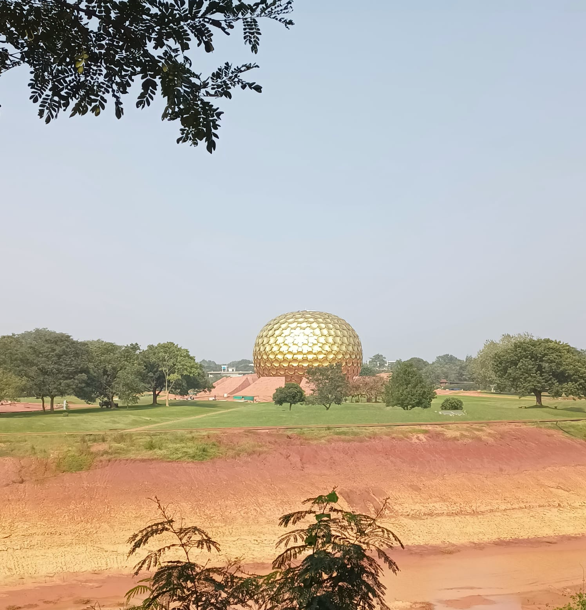
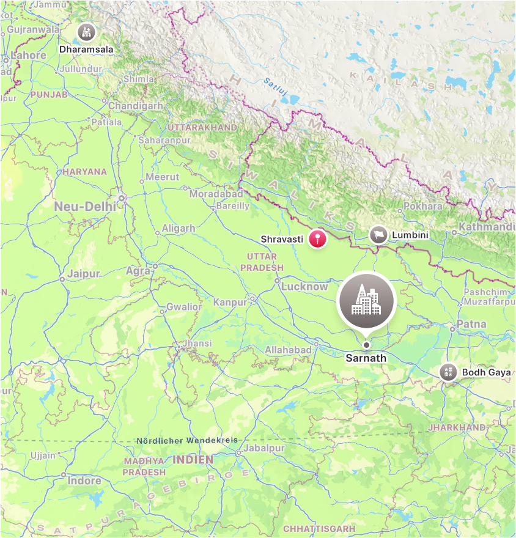

Reise nach deinem Abschluss nach Indien
Ein Reiseführer mit Fokus auf kulturelle Erlebnisse, Buddhismus und soziales Engagement.
करो - viel Spaß

| Abitur in der Tasche und jetzt??
Erweitere deinen Horizont durch eine Reise ins tiefe Indien und entdecke dabei die außergewöhnliche Kultur des Landes! Erlebe ein unvergessliches Freiwilliges soziales Jahr in Indien und tauche in eine Welt ein, die dich nachhaltig prägen wird. |
यद Indien
I. Leben in Indien
| Indien ist die Geburtsstätte Buddhas. Der Buddhismus entstand vor rund 2500 Jahren in diesem Land,
auch wenn heute der Hinduismus die größte Religion darstellt.
Für die Menschen in Indien bildet die Familie das Zentrum des gesellschaftlichen Lebens
und spielt im Alltag eine entscheidende Rolle.
|
| Informationen über Indien
Indien ist das bevölkerungsreichste Land der Welt. Rund 1,4 Milliarden Menschen leben dort – etwa 17‑mal so viele wie in Deutschland. Aufgrund der großen Vielfalt an Bevölkerungsgruppen existieren zahlreiche Sprachen, wobei Hindi und Englisch am häufigsten gesprochen werden. Trotz eines offiziellen Verbots ist das Kastensystem weiterhin spürbar. Indien ist ein sehr religiöses Land, in dem traditionelle Werte und besonders die Familie einen hohen Stellenwert haben. Rituale, Gebete und Zeremonien – sogenannte Pujas – prägen den Alltag vieler Menschen. Astrologie beeinflusst häufig wichtige Entscheidungen, und ältere Menschen genießen großen Respekt. Gleichzeitig leiden viele Großstädte unter starker Umweltverschmutzung. |
 |

|

|
| Die Gesellschaft in Indien: Das Kastensystem
Das Kastensystem teilt die Gesellschaft in verschiedene Gruppen ein: Brahmanen als Priester und Gelehrte, Kshatriyas als Fürsten, Krieger und Beamte, Vaishyas als Bauern und Kaufleute sowie Shudras als Dienstleister. Unterhalb dieser vier Varnas stehen die Dalits, die sogenannten „Unberührbaren“. Menschen werden von Geburt an einer Kaste zugeordnet und können diese nicht verlassen. Auch Heiraten sind nur innerhalb der eigenen Kaste erlaubt, und Kinder aus kastenverschiedenen Ehen werden oft verstoßen. Jede Kaste hat eigene Pflichten und Moralgesetze. Das System existiert bereits seit etwa 1500 v. Chr. |  |
| Die Bevölkerung Indiens - Lebensweise der Menschen
In traditionellen Haushalten leben häufig mehrere Generationen zusammen, wobei der älteste Mann meist die Entscheidungen trifft. Die Familie unterstützt sich gegenseitig, und die Ratschläge der Älteren werden respektiert. Gemeinsame Mahlzeiten haben eine große Bedeutung. Viele Ehen werden arrangiert, und die Eltern der Braut organisieren ein großes Fest. Kinder werden streng erzogen, manchmal auch körperlich bestraft. |
| Die Bevölkerung Indiens - Essenstraditionen in Indien
In vielen Regionen wird mit den Händen gegessen, und Einkäufe auf Märkten gelten als beliebte Freizeitaktivität. Viele Inder ernähren sich vegetarisch, da Religion oder Kastenzugehörigkeit Fleischkonsum verbieten können. Indien ist bekannt für seine vielfältigen Gewürze wie Ingwer, Kurkuma, Kardamom und Koriander. Streetfood ist weit verbreitet, und das Nationalgetränk ist Chai – ein Tee aus Milch und Gewürzen. |  |
| Die Bevölkerung Indiens - Freizeitbeschäftigungen in Indien
Die Freizeit verbringen viele Menschen mit Freunden oder Familie. Religiöse Festivals und Zeremonien sind ein wichtiger Bestandteil des Lebens. Bollywood prägt die Popkultur, und Cricket ist der beliebteste Sport des Landes. Traditionelle Spiele wie Kabaddi oder Kho-Kho werden häufig an Schulen oder bei Dorffesten gespielt |
| Astrologie
Astrologie spielt in Indien eine große Rolle. Das aktuelle Muhurta bestimmt, ob ein Zeitpunkt günstig ist. Die Dashas, also die Abfolge der Planetenphasen, geben Hinweise darauf, ob man Risiken eingehen oder eher vorsichtig planen sollte. Beim Kundali Milan werden Geburtshoroskope verglichen, um die Kompatibilität eines Paares und dessen zukünftiges Eheglück einzuschätzen. |
| Interkulturele Begegnungen
Nach dem Motte:Athithi Devo Bhava-der Gast ist GottGott – sind viele Inder sehr gastfreundlich. Besonders in ländlichen Gebieten sprechen Einheimische gerne Ausländer an, um mehr über deren Herkunft zu erfahren. Dennoch existieren auch in Indien Vorurteile und Diskriminierung. |
II. Der Buddhismus
| Der Buddhismus entstand durch Buddha, den Erleuchteten. Er suchte nach einem Weg, Leid und Tod zu überwinden, und erkannte, dass beides das Leben bestimmt. Das Ziel des buddhistischen Weges ist die Befreiung aus dem Kreislauf des Leidens und der Wiedergeburt. |
| Die Legende des Buddha
Siddharta Gautama wurde um 560 v. Chr. in Nordindien geboren. Ihm wurde vorhergesagt, er werde entweder ein mächtiger Herrscher oder ein Buddha. Nach Begegnungen mit Krankheit, Leid und Tod verließ er seine Familie, um die Wahrheit zu suchen. Unter einem Baum meditierte er, bis er die vier edlen Wahrheiten erkannte. Viele Anhänger folgten ihm, besonders aus den unteren Schichten. Später wurde er als Verkörperung des Gottes Vishnu angesehen, wodurch der Buddhismus in Indien fast verdrängt wurde. |
Die vier edlen Wahrheiten von Buddha
|
Drei Belangen des Buddhismus
Die drei Belangen umfassen das ethische Verhalten (Sila) mit rechter Rede, rechtem Handeln und rechtem Lebenserwerb, die geistige Disziplin (Samadhi) mit rechter Mühe, Achtsamkeit und Konzentration sowie die Weisheit (Prajana), die aus rechtem Denken und Verstehen besteht. |

|

|

|
III. Besonderheiten des Buddhismus in Indien
| Indien ist die Geburtsstätte des Buddhismus. Vor etwa 800 Jahren war er fast ausgestorben, und um 2001 gab es eine weitere Phase des Rückgangs. Heute leben wieder über 30 Millionen Buddhisten in Indien, etwa zwei Prozent der Bevölkerung. Viele Dharma-Aktivitäten fördern Bildung, Selbstvertrauen und Frauenrechte. Asvagosha vermittelt buddhistische Inhalte an Menschen ohne Zugang zu Büchern, und die Landbevölkerung erhält grundlegende Aufklärung über den Buddhismus. |
IV. Die Heiligtümer der Buddhisten
|
 |
V. Freiwilligenarbeit mit Kindern in Indien
| Ein Freiwilligendienst dauert sechs bis zwölf Monate und kann in Kindergärten, Waisenhäusern oder Projekten für Straßenkinder stattfinden. Die Aufgaben umfassen Hausaufgabenbetreuung, Unterricht, Ausflüge, Sport und kreative Aktivitäten. Teilnehmen kann man zwischen 18 und 28 Jahren, mit körperlicher Einschränkung bis 35. Voraussetzung sind ein Schulabschluss, gute Englischkenntnisse und Freude an der Arbeit mit Kindern. Einsatzorte sind unter anderem eine Schule in Linambudhi Palya in Mysore sowie ein Kinderdorf in Gundlupet. |
Arbeit mit Kindern
Klicke für weitere Informationen |
Freiwilligenarbeit in Indien – Mitarbeit im Kinderdorf in Grundlupet
Klicke für weitere Informationen |
VI. Begegnung mit lokaler Kultur
| Reisende berichten von vielfältigen Eindrücken. Viele fühlten sich wohl, auch wenn sie manchmal aufgrund ihrer Kleidung oder Herkunft auffielen. Die Menschen begegneten ihnen meist respektvoll und gastfreundlich. Besonders beeindruckend waren die Tempel, Feste und Geschichten der Einheimischen. Der Unterschied zwischen Nord- und Südindien war für viele ein Kulturschock, vor allem wegen der Armut und des Bettelns in Großstädten. Strenge Kleidervorschriften im Norden wurden als belastend empfunden. |
VII. Mein Beitrag für Indien
|
Erfahrungen und Eindrücke von anderen Reisenden
|
Gründe für ein FSJ
|